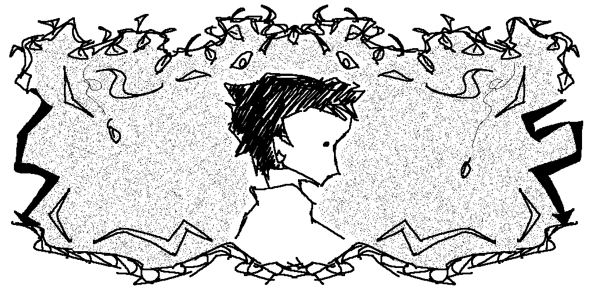

<!DOCTYPE html>
<html>
<head>
<meta name="viewport" content="width=device-width, initial-scale=1.0"> 
    <title>HOME</title>
    <link rel="icon" type="image/x-icon" href="media/favicon.png">
<style>
@font-face {
  font-family: Neue Haas;
  src: url(fonts/NeueHaasDisplayRoman.ttf);
}

@font-face {
    font-family: Neue Haas;
    src: url(fonts/NeueHaasDisplayBold.ttf);
    font-weight: bold;
}

* {
  font-family: Neue Haas;
  box-sizing: border-box;
}

a:link {
  color: rgb(255, 0, 0);
  background-color: transparent;
  text-decoration: none;
}
a:visited {
  color: rgb(201, 0, 0);
  background-color: transparent;
  text-decoration: none;
}
a:hover {
  color: rgb(255, 124, 124);
  background-color: transparent;
  text-decoration: underline;
}
a:active {
  color: rgb(29, 0, 0);
  background-color: transparent;
  text-decoration: underline;
}

body {
    background-image: url('');
  font-family: Neue Haas;
  font-size: 20px;
  padding: 0px;
  background: #ffffff;
}

.center {
  display: block;
  margin-left: auto;
  margin-right: auto;
  width: 80%;
}

.header {
  padding: 10px;
  text-align: center;
  background: #f8f8f8;
  background-image: url('media/headerbg.png');
}

.header h1 {
  font-size: 0px;
  text-align: center;
}

.topnav {
  overflow: hidden;
  background-color: #000000;
}

.topnav a {
  list-style-type: none;
  float: left;
  display: block;
  color: #f2f2f2;
  text-align: center;
  padding: 14px 40px;
  text-decoration: none;
}

.topnav a:hover {
  background-color: #ff0000;
  color: black;
}

.leftcolumn {   
  float: left;
  width: 75%;
}

.rightcolumn {
  float: left;
  width: 25%;
  background-color: #f1f1f1;
  padding-left: 10px;
}

.fakeimg {
  background-color: #aaa;
  width: 100%;
  padding: 20px;
}

.card {
  background-color: white;
  padding: 20px;
  margin-top: 5px;
}

.row::after {
  content: "";
  display: table;
  clear: both;
}

.footer {
  padding: 20px;
  text-align: center;
  background: #000000;
  margin-top: 20px;
}

@media screen and (max-width: 506px) {
  .leftcolumn, .rightcolumn {   
    width: 100%;
    padding: 0;
  }
}

@media screen and (max-width: 506px) {
  .topnav a {
    float: none;
    width: 100%;
  }
}
</style>
</html>
<body>

<div class="header">
<h1></h1>
</div>

<div class="topnav">
  <a href="index.html">home </a>
  <a href="work.html">work </a>
  <a href="about.html">about </a>
</div>

<div class="leftcolumn">
  <div class="card">
    <h1>Since the dust has settled...</h1>
      </img>
      <p>
      <i>I draw on a semi-regular weekly basis on <a href="https://www.instagram.com/jambajabuc/" target="_blank">Instagram.</a> Concocting new things to be seen as much as I can.</i>
      <br>
      <br>
      <b>some updates:</b>
      <br>
      <br>
      <i><u>10/1/2025</u></i>  : I made the newest version of my website! it's been a while since I've last updated it, but it now reflects my work up to the present! and with a fresh coat of paint as well. as Björk once said: "<i><b><a href="https://x.com/bjork/status/67920551766786048?lang=en" target="_blank">why don't you click, drag and use keyboard arrows on jambajabuc.github.io?</a></i></b> " She didn't say that last part though, she said her own website.
      <br>
      <br>
      <i><u>04/03/2025</u></i>  : <b><a href="https://www.youtube.com/watch?v=IZ2A0JyxUo4" target="_blank">them, I call SIB</a></b>. for two days straight I toiled in my apartment. I went outside and I shot the sky with a camera. I went inside and dug my nails and palms into my forehead. I smiled, I cried, and after banging my head against it for 48 hours, out came this short film. it was made for <b>ddbentl's 48-Hour Film Fest</b> (please check out <a href="https://ddbentl.com/home" target="_blank">bentl's work</a>), and watched so many wonderful films made by so many wonderful people. it was the first film I have ever screened.
      <br>
    </p>
  </div>
</div>

<div class="rightcolumn">
  <div class="card">
    <h1>My Reel</h1>
    Alternatively, you can <b>click</b> on the QR code to visit.
    <br>
    <a href="oops.html" target="_blank"></a>
    <i>lately, I've been thinking about:</i>
    <br>
    <p style="font-size: 14px;">
       <a href="https://www.onebattleafteranothermovie.com/" target="_blank">One Battle After Another (dir. Paul Thomas Anderson)</a>. wowowow. One of my absolute favorites of the year next to <b>Sinners</b>. Chase Infiniti especially is a standout amongst a cast that is PERFECT. A really fantastic thriller with a very touching family story at its core. Family that cowards like <i>Lockjaw</i> will never have.
      <br>
      <br>
       <a href="https://lianaflores.lnk.to/Flowerofthesoul-fullbloom" target="_blank">Flower of the soul - Liana Flores.</a> I've been filling my ears with so much noise. I listen to music from all around the world, I listen to the subway pierce my eardrums going on the Blue Line, I listen to people laugh, cry, argue. It's surprising how fresh music is when it's just voices, a guitar, some drums and a piano.
      <br>
      <br>
       <a href="https://deltarune.com/" target="_blank">DELTARUNE.</a> As of writing this, UNDERTALE turned 10 the other day. I replayed it recently, and then played its successor shortly after, up to where it's presently at. Toby Fox is truly one of the greatest to ever do it. I have nothing new to contribute regarding his music. His writing though? Fantastic. Temmie's artwork and the whole team does such an amazing job. I cannot wait for the rest to come. 
    </p>
  </div>
</div>

<div class="row"></div>

<div class="footer">
  <a href="mailto:jake.hernandez.film@gmail.com@gmail.com"></a>  <a href="https://www.youtube.com/@jambajabuc" target="_blank"></a>  <a href="https://www.instagram.com/jambajabuc/" target="_blank"></a>  <a href="https://www.linkedin.com/in/jacobhern/" target="_blank">
  </div>
</body>